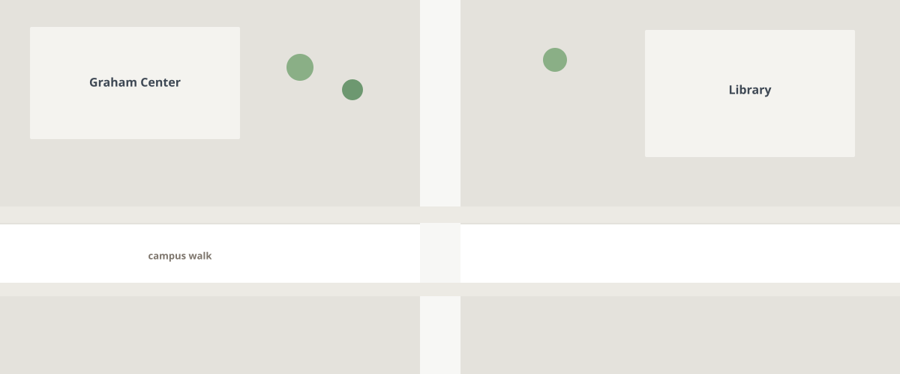
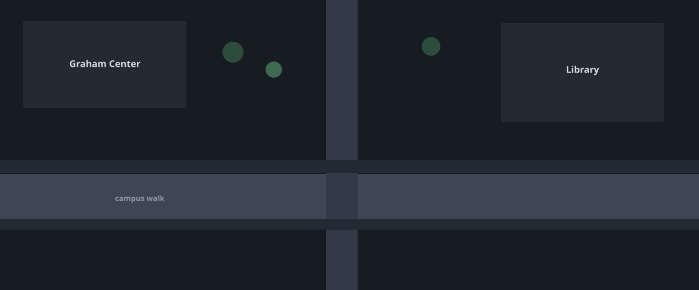

The live map, verify queue, and hazard details stay put. Desktop keeps the sidebar. Phones keep two destinations. On the map, nearby hazards of one kind collapse to a short name. One hazard keeps that name on a precise mark.


Schematic campus drawing